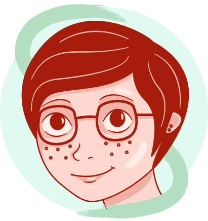
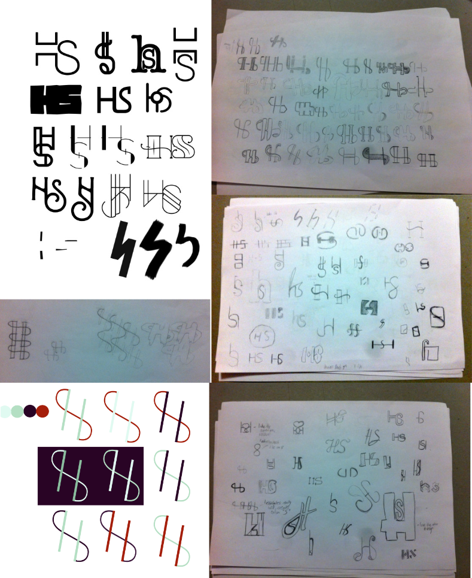

Personal Brand-
Identity Development
One of the most challenging things I have designed so far was a brand for myself. You have to have a solid knowledge of who you are as a person before you even pick up a pencil to start designing, never-mind actually developing a visual style you feel matches your personality.
In this case study I would like to show you some of my own branding work and talk to you a bit about the thought process that went into creating it.
{kind=link}
This design for my monogram my seem very simple at first glance, but a lot of thought has went into it's design. For example, the measurements of this monogram have all been based on the Fibonacci sequence to add to its aesthetic appeal.
-The letter “H” is set at a 15 degree angle (5+5+3)
-The gap in-between the two stems of the H is 5 times the width of one of the stems
-The stems of the H are 5 points thick
-The S is 3 points thick
-There are 3 separate components to this piece's design (two straight lines for the H and one line for S)
I also like that my visual marque tessellates very well, creating a pattern that is unique to me and holds the most important visual aspect of my brand in it. Additionally, this monogram can also be read the exact same way upside down which also makes for an interesting and uniquely functional design feature.
This accompanying visual marque adds a bit of my own personality to the brand, but also serves the purpose of letting people know what I look like, making me more recognisable as a designer at events such as design conferences.
I looked at many colour palettes before I settled on this one. I felt that the purples, blues greens and red all had a quirkiness to them but could also be used in a way that made them look very serious and sophisticated, so it became a very versatile colour palette.
Another thing that makes this colour palette unique to me and my brand is that the red colour used is actually the colour of my hair, sampled from pictures of me. It is small details like this that make me feel close personally to this brand.
However, you can see from the image below that this was not my immediate idea. I worked through a lot of colour palettes before I finally settled on this one and I feel that without doing this important development work there is a good chance my brand would not be as strong or as personal to me.
You can also see below the amount of sketching and development I did before I arrived at the final designs that I developed for my brand.
As you can see, a large amount of development has been put in to making this piece of branding the best that I can make it, and buy the time I had finished designing it, I felt like I had created a unique piece of design work that looked good on the surface but also had many interesting design features the closer you look at it.


Back to top